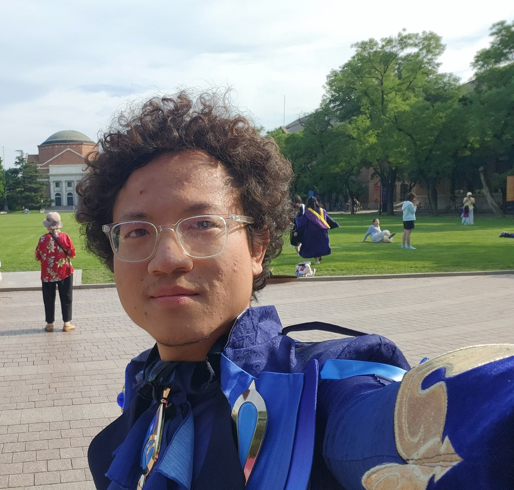
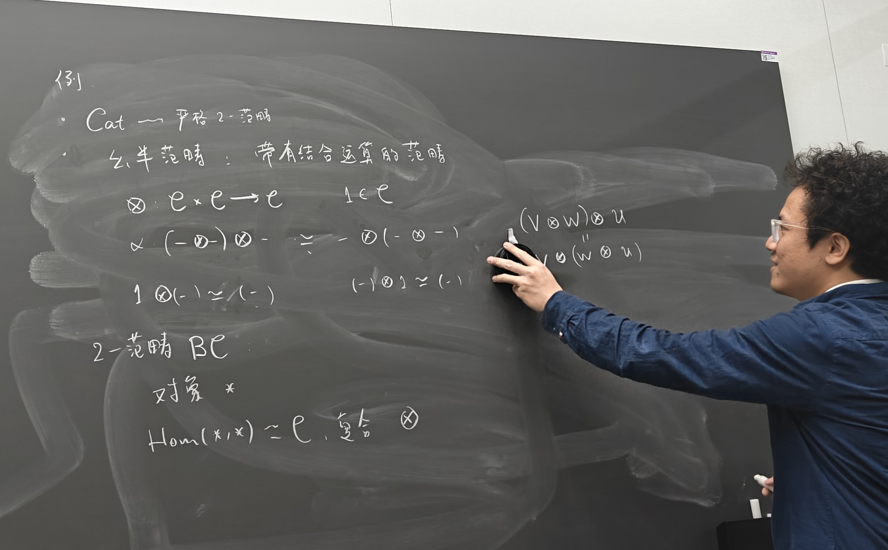
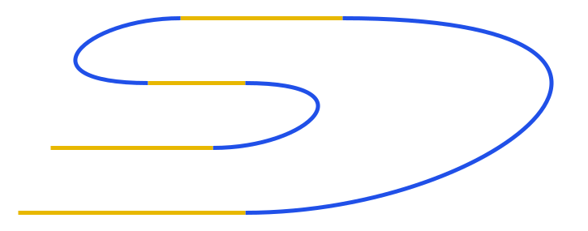
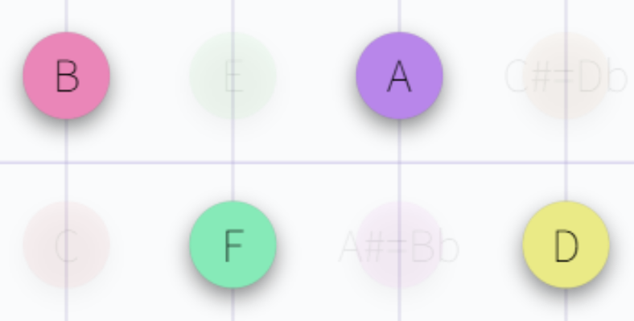
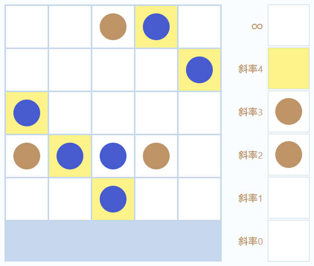

About 基本信息

I am a graduate student at Qiuzhen College, Tsinghua University. 我是清华大学求真书院的研究生.
I was born on March 27, 2003. 我的生日是 2003 年 3 月 27 日.
Email: 邮箱:
wangjiny24@mails.tsinghua.edu.cnjinExp2iPi@gmail.com
Recently I have been devoted to building 单纯百科 (Simplopedia), a personal encyclopedia of maths. The current URL is simplopedia.org.
我最近致力于建设单纯百科, 我的个人数学百科全书. 目前的网址是 simplopedia.org.
Maths 数学

My supervisor is Prof. Lin Chen. 我的导师是陈麟老师.
My mathematical interests lie in 我的数学兴趣 (按时间顺序排列):
- initially, differential geometry, algebraic topology;微分几何, 代数拓扑;
- later, category theory, topos theory, categorical logic,范畴论, 意象, 范畴逻辑;
- homotopy theory, homotopy type theory;同伦论, 同伦类型论;
- and recently, higher category theory and the geometric Langlands program.高阶范畴论, 几何 Langlands 纲领.
Some of my talks are on Bilibili. B 站上有一些我的讲座.
Some of my notes are on Zhihu. 知乎上有一些我的笔记.
Here are my Github repositories. 这里是我的 Github 仓库.
Markdown commutative diagram / matrix generator Markdown 交换图 / 矩阵生成器
An interactive commutative diagram / matrix editor for Markdown. 一个用于 Markdown 的交互式交换图 / 矩阵编辑器.
Page · commutative diagram · matrix 页面 · 交换图 · 矩阵
线图生成器 String diagram generator

线图绘制工具, 可导出 SVG 图片与 JSON 代码. A string diagram editor that supports exporting SVG images and JSON code.
Selected works 数学作品选
These contents are in Chinese unless specified otherwise. 除特别说明外, 以下资料为中文.
Starting in 2026, I have been doing most of my math writing on Simplopedia. 自 2026 年起我的数学写作基本上都在单纯百科上进行.
盲人摸象 (Blind men touching an elephant)
A basic introduction to topos theory. 意象理论入门资料.
Book PDF on Github (>300 pages) Github 上有书籍 PDF (>300 页)
单纯百科 Simplopedia
A forest-style site and a personal encyclopedia of mathematics. 一个 forest 风格的个人数学百科.
∞-Group TheoryEnglish
Rewriting classical group theory concepts in the intrinsic language of ∞-categories. 在 ∞-范畴的内蕴语言中重新定义经典群论概念.
Nonabelian Cohomology English
A short note on nonabelian cohomology, using the language of ∞-toposes. 关于非 Abel 上同调的简短笔记, 使用 ∞-意象的语言.
Sketches of an Elephant English
A short talk on topos theory (title borrowed from P. Johnstone) 关于意象理论的简短报告 (标题致敬 P. Johnstone)
Interview with Prof. Laurent Lafforgue English
Video 1: From Langlands program to topos theory 视频 1: 从 Langlands 纲领到意象理论
Video 2: The future of topos theory 视频 2: 意象理论的未来
Category Theory in Differential Geometry 微分几何中的范畴学
A short talk on the use of sheaves and stacks in differential geometry. 关于层和叠在微分几何中的用处的简短报告.
Quillen's 1969 paper explained English
A presentation of Quillen's 1969 paper on formal group laws. Quillen 1969年关于形式群律论文的介绍.
Survey on Atiyah–Singer index theorem English
Spin geometry and Dirac operators 自旋几何与 Dirac 算子
Notes on Categorical Logic Summer School 2025 2025 范畴逻辑暑校笔记
Notes 1: Posets and propositional logic 笔记 1: 偏序集与命题逻辑
Notes 2: Lex categories, algebraic theories and locally finitely presentable categories 笔记 2: 左正合范畴, 代数理论, 局部有限可表现范畴
Notes 3: Sketches 笔记 3: 提纲 (Sketches)
Principal bundles in an ∞-topos ∞-意象中的主丛
All concepts are Kan extensions 一切概念都是 Kan 扩张
Music 音乐
Music is my main hobby. I enjoy studying harmonics and chord progressions, and I can accompany on the piano, guitar or bass. 音乐是我的主要爱好. 我喜欢研究和声, 和弦进行; 能用钢琴, 吉他和贝斯进行即兴伴奏.
单纯和声学 Simphony
A forest-style site and a personal encyclopedia of harmonics (in progress). 一个 forest 风格的和声学网站 (建设中).
The site also includes a web-based music notation parser and player app that uses a special musical notation syntax to compose polyphonic music and play it back in real time. It supports both 12-tone and 19-tone equal temperament tuning systems. 网站还包含一个基于 Web 的乐谱解析和播放应用, 使用特殊的音乐代码语法, 可以编写多声部音乐并实时播放. 支持 12 和 19 平均律两种调律系统.
Chord Progression Player 和弦进行播放器
A web-based chord progression player with customizable chord codes. 基于 Web 的和弦进行播放器, 支持自定义和弦编码.
Chord Guesser 猜和弦
A game that plays a random chord; click the piano keys to guess it. 一个小游戏: 聆听随机和弦, 在钢琴键上点出正确音符.
Guitar Fretboard 吉他指板

A guitar fretboard visualizer that maps notes to a color wheel and highlights selected pitches across all octaves. 吉他指板可视化工具, 用色轮标记十二个音, 并支持筛选高亮任意音名.
Frequency Ratio 频率比
Two tones at a given frequency ratio played simultaneously. 播放两个指定频率比的音.
Selected musical works 音乐作品选
Que le Vent Soit Doux
An improvised piano re-arrangement of a beautiful piece of background music from Genshin Impact. 原神中一段优美的背景音乐的即兴钢琴改编.
Misc 其它
Aperiodic Tiling 非周期镶嵌
An interactive aperiodic rhombus tiling visualization tool. 非周期菱形镶嵌的交互式可视化工具.
Game of Life 生命游戏
A toy simulator of Conway's Game of Life. Conway 生命游戏的简易模拟器.
F5P2

A game of five-in-a-row played on the projective plane over the finite field F5. 有限域 F5 上的射影平面上的五子棋.
Super Tic-Tac-Toe 超级井字棋
A game of tic-tac-toe played on the square of the classic tic-tac-toe board. 井的平方上的井字棋.
Stars 星空
An interactive visualization of the night sky. 交互式星空可视化.
Globe 地球
A 3D Earth marker tool. 3D 地球标记工具.
Links 链接
Organizations 组织
香蕉空间 (Banana Space)
A growing Chinese math community. 一个成长中的中文数学社区。
Friends 朋友
李心宇 (Li Xinyu)
ApolloniusSun
QZC31
Shared homepage of several brilliant students from class no.31, Qiuzhen College. 求真 31 班几位杰出的同学的共同主页.